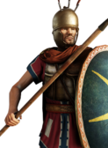

Campanian Hoplites


Class: spearmen · Category: infantry · Men per unit: 40
Description
These Campanian Hoplites are among the heaviest infantry available in southern Italy, representing the wealthy aristocracy and citizen levies of cities such as Capua, Cumae, Neapolis, and Nola. These men have been able to afford the best equipment available. They are clad in a rich panoply of Hellenic and Italic armour, entering the battle carrying large, bronze-faced Argive shields (aspides) emblazoned with starbursts, solar rays, and geometric designs. Their defensive equipment reflects the immense wealth of the Campanian plain, consisting of bronze muscle cuirasses, Italic triple-disc and rectangular anatomical breastplates, or composite linen corselets (linothorakes) with pteryges, worn over colourful short tunics, bronze belts, and greaves. To protect their heads, these men equip themselves with crested Attic and Samno-Attic helmets, or bronze Montefortino helmets adorned with tall plumes and feathers. Campanian Hoplites fight in a dense phalanx formation, armed with thrusting spears, swords (in RIS purely decorative), as well as javelins, a traditional Italic weapon of which they make good use by disrupting opposing ranks before closing in for the melee. Thanks to their valour and the quality of their arms, these men form a powerful wall of spears that is strong enough to hold the line against any foe, while their cavalry charges to secure victory.
Historical background
During the late 5th century BC, Oscan warbands descended from the Apennines and conquered the wealthy Etruscan and Greek cities of the Campanian plain, seizing Capua in 423 BC and Cumae in 420 BC (Liv. 4.37.1–2, 4.44.12; Diod. Sic. 12.76; Burns, The Cultural and Military Significance (2005), pp. 18–20). However, rather than destroying existing urban institutions, the conquerors absorbed the older Etruscan and Hellenic traditions. Towns such as Nuceria had existed since the 6th century BC, and at Capua defeated Etruscan nobles continued to participate in civic life long after their capitulation (Farkas, Leadership among the Samnites and related Oscan-speaking Peoples (2006), pp. 136, 195). At Neapolis, Campanian migrants peacefully intermingled with the Greek citizenry to form a shared Greco-Campanian ruling elite. Strabo observes that a proof of the mingling of the Campanians with the Greeks is found in the list of names of their demarchs, “for the earliest names are Greek only, whereas the later are Geek mixed with Campanian" (Strab. 5.4.7; Fields et al., Caudine Forks 321 BC (2020), p. 13; Fronda, Between Rome and Carthage (2010), p. 139).
As these two cultures merged in Campania, their mutual influence produced an aristocratic hoplite class equipped with both Greek and native Italic arms, extensively documented in Campanian art and funerary archaeology (Burns (2005), pp. 82–107). A Campanian red-figure neck amphora attributed to the Astarita Painter (c. 340–330 BC; Trieste, Museo di Storia ed Arte, inv. 5383) depicts an Oscan warrior holding a spear and an aspis, wearing a short Oscan tunic and an Attic-style helmet crested with three tall feathers (Fields et al. (2020), p. 11). Composite linen corselets (linothorakes) appear in a 4th-century BC wall painting from the Italic Temple of Cumae/Naples, which shows a warrior in hoplite panoply wearing greaves, a feathered pseudo-Corinthian helmet, and a linothorax for protection, while Campanian red-figure vases, such as an amphora by the Libation Painter (Capua II, 340-330 BC, R. K. collection Hessen, since 1980) and a bell krater by the Painter of B.M.F. 229 (c. 330–310 BC from a private collection), portray Campanian hoplites wearing the iconic Italic triple-disc cuirass alongside spears and javelins (Burns (2005), pp. 78, 173–185).
Campanian infantry and horsemen were also hired overseas as prized mercenaries in Sicily, however, their unreliability and tendency for betraying their employers became notorious. Hired by Carthage in 411 BC and again by the Syracusan tyrant Dionysios I in 404 BC to crush domestic rebellions, a force of Campanian mercenaries seized the Sicilian city of Entella by treachery. They slaughtered its male citizens and minted 4th-century BC bronze coins of their own, which were inscribed in Greek ΚΑΜΠΑΝΩΝ (kampanon) as well as depicting Oscan armour (Diod. Sic. 13.44, 13.62.5, 13.80.4, 14.9.2–9; Burns (2005), p. 23). A generation later, following the death of the Syracusan tyrant Agathokles in 289 BC, evicted Campanian mercenaries replicated this feat at Messene (modern Messina). Invited into the city as friends, they massacred the male populace and renamed their new state Mamertina after Mamers (Mamertos), the Oscan god of war, an identity preserved on mid-3rd-century BC Oscan inscriptions celebrating the touta Mamertino ("Mamertine community", ImIt Messana 4 = ST Me 1; Diod. Sic. 21.18.1–2; McDonald, Italy before Rome (2022), p. 120).
In Italy, following Rome's intervention in Campania in 343 BC and the Latin Settlement of 338 BC, Capua, Cumae, and Suessula were incorporated into the Roman commonwealth as civitas sine suffragio (citizens without the vote) (Liv. 7.31, 8.14.10–11; Tan, 'The dilectus-tributum system', in: Armstrong and Fronda (eds.), Romans at War (2020), pp. 64, 68–69). Thus, thousands of Campanian infantrymen started serving in the legions, many as citizens, others as allies (Festus, Gloss. Lat. 117L, 126L; Tan (2020), pp. 60–61). Dionysios notes that at the Battle of Asculum (279 BC), Roman commanders distributed them across the battle line to prevent weak points: “The Latins, Campanians, Sabines, Umbrians, Volscians, Marrucini, Peligni, Ferentani, and their other subjects they divided into four divisions and mingled them with the Roman legions, in order that no part of their lines might be weak” (Dion. Hal. Ant. Rom. 20.1.5).
Around the same time, the Campanian garrison stationed at Rhegion under Decius Vibellius in 280 BC, known as the Legio Campana, seized the city out of greed, massacring and enslaving its inhabitants (Polyb. 1.7.6–8; Dion. Hal. Ant. Rom. 20.4–5; Armstrong, 'Organized chaos', in: Armstrong and Fronda (eds.), Romans at War (2020), p. 93). For a decade, these rogue soldiers ruled independently in alliance with the Mamertines, until Roman armies recaptured Rhegion in 270 BC and restored the surviving citizens to their rights (Polyb. 1.7.9–11). While the allied Mamertine mercenaries captured in the city were executed on the spot, the surviving soldiers of the Legio Campana were sent to Rome, where 300 men were publicly scourged and beheaded in the Roman Forum in batches of fifty over the course of six days (Polyb. 1.7.11–12; Dion. Hal. Ant. Rom. 20.16.1–2; Val. Max. 2.7.15f). Despite this mutiny, Campania remained a massive source of infantry for Rome. When Roman officials compiled their military census during the Gallic crisis of 225 BC, Polybius tallied Roman and Campanian manpower together at 250,000 infantry and 23,000 cavalry (Polyb. 2.24.14; Tan (2020), p. 62). Whereas Polybius lists separate manpower figures for Rome's other Italian allies, his combined tally for the Romans and Campanians reflects how their civic status integrated them directly into Rome's census rolls. This also highlights the vast infantry reserves Campania contributed to the Roman army prior to Capua's defection to Hannibal in 216 BC (Liv. 23.2–9; Tan (2020), p. 62; Fronda (2010), pp. 116, 121–123).
Stats
| Rank in roster | ||
|---|---|---|
| Men per unit | 40 | ███······· 30% |
| Attack | 12 | █████····· 47% |
| Charge bonus | 15 | ██████···· 60% |
| Defence | 40 | ████████·· 75% |
| · armour | 9 | █████····· 50% |
| · defence skill | 26 | ████████·· 79% |
| · shield | 5 | ██████···· 56% |
| Morale | 11 | ████······ 39% |
| Discipline | Impetuous (may charge without orders) | |
| Training | Highly trained | |
| Recruitment cost | 1,640 dn | ███······· 26% |
| Upkeep per turn | 600 dn | ████······ 39% |
| Turns to recruit | 2 |
Weapons
| Primary | Secondary | Primary | Secondary | Primary | Secondary | Primary | Secondary | ||||
|---|---|---|---|---|---|---|---|---|---|---|---|
| Attack | 12 | 10 | Type | thrown · blade | melee · blade | Projectile | pilum_early | — | Ammunition | 2 | — |
| Charge bonus | 15 | 15 | Damage | piercing | piercing | Range | 40 | — | Properties | Armour-piercing (counts only half the target's armour) · used just before charging into combat | Light spear (braced against cavalry charges from the front) · +8 attack against cavalry |
Defence
| Primary | Secondary | Primary | Secondary | Primary | Secondary | Primary | Secondary | ||||
|---|---|---|---|---|---|---|---|---|---|---|---|
| Total | 40 | — | Armour | 9 | — | Defence skill | 26 | — | Shield | 5 | — |
Condition and terrain
| Hit points | 1 | Ground: scrub / sand / forest / snow | -1 / -1 / -4 / -1 | Charge distance | 30 | Formations | Square |
Technical stats
| Time between blows (primary / secondary) | 2.5 s / 2.5 s | Collision mass per man (1.0 is normal) | 1.22 | Spacing between men: close / loose | 1 × 1.05 m / 2 × 2.4 m | Default ranks | 5 |
| Extra fatigue in hot climates | 2 |
In battle: Can sap · Good stamina
Who can recruit it
A core roster unit for 2 factions, each able to raise it anywhere they hold the right building:
Any faction holding one of the provinces below can field it.
Exactly what a settlement must have, route by route (3)
| For | Building | Also requires | For | Building | Also requires | For | Building | Also requires | |||
|---|---|---|---|---|---|---|---|---|---|---|---|
| Capua, Mamertines | Direct Rule | Tier 2 Military Industrial Complex · Tier 2 Colony | Capua, Mamertines | Homeland | Garrison Building or Tier 1 Military Industrial Complex | Every faction except Capua, Mamertines (area-of-recruitment unit) | Any settlement | Tier 2 Military Industrial Complex · Campanian area of recruitment · Dependency or Indirect Rule · Tier 1 Colony not built |
Areas of recruitment

| Zone | Provinces | ||||||
|---|---|---|---|---|---|---|---|
| Campanian | 3 |